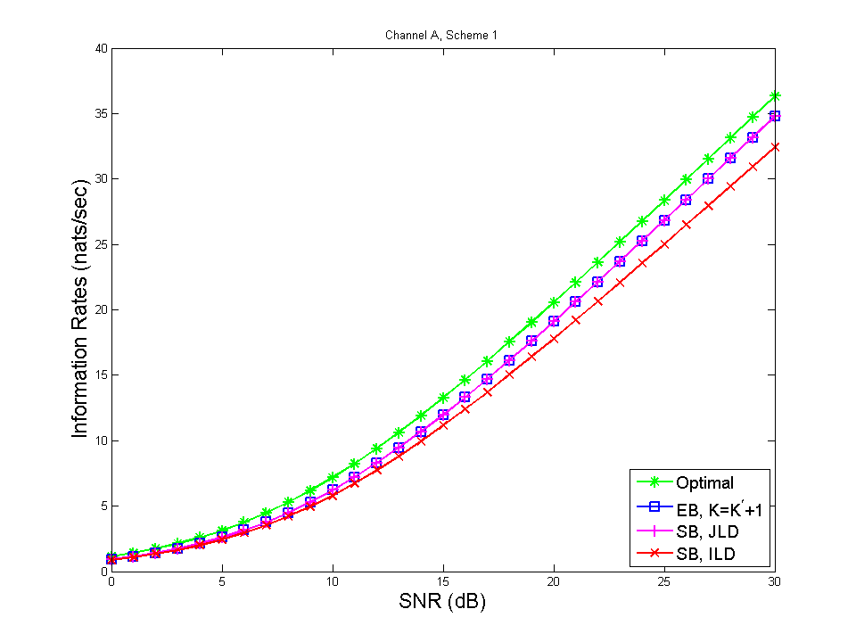
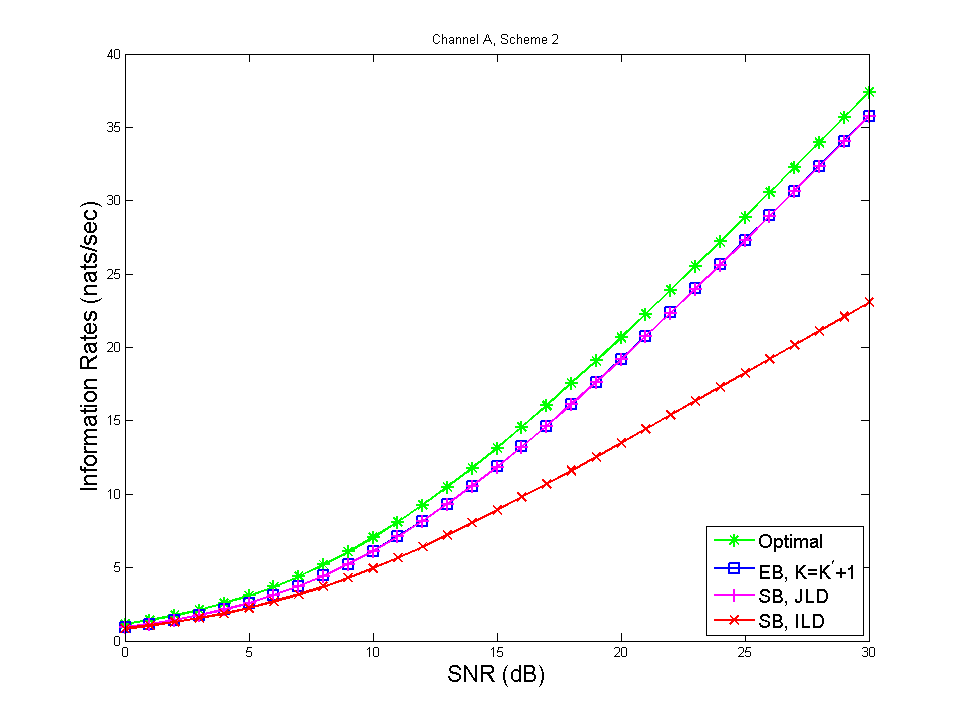
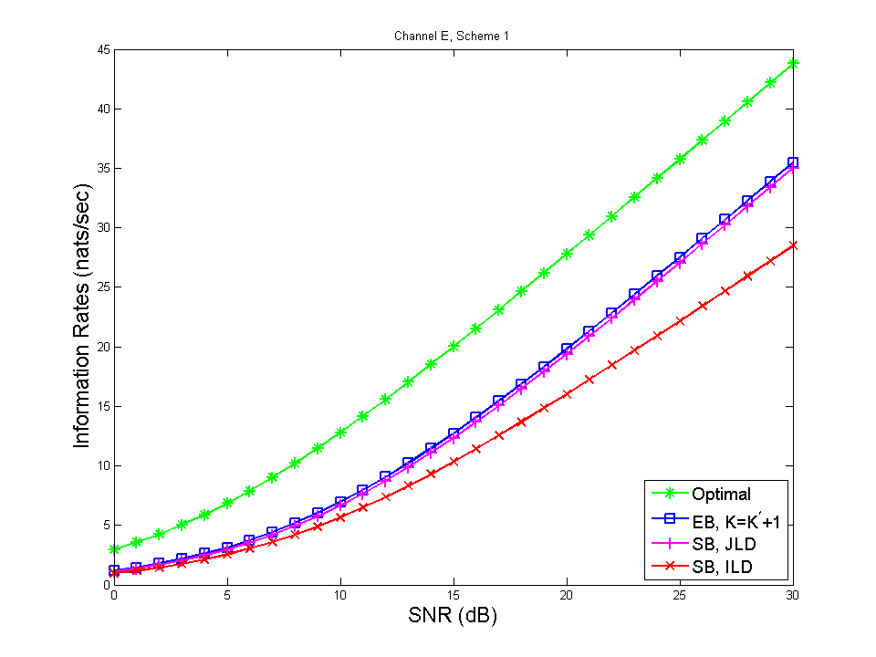
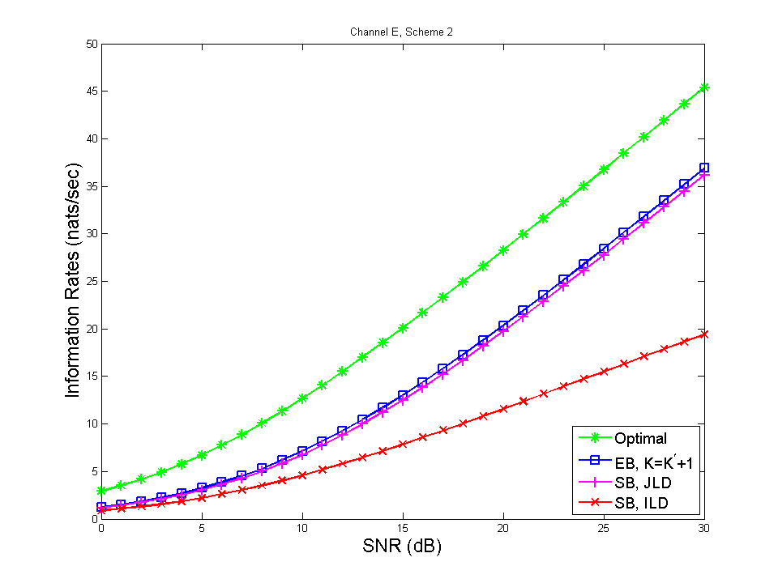
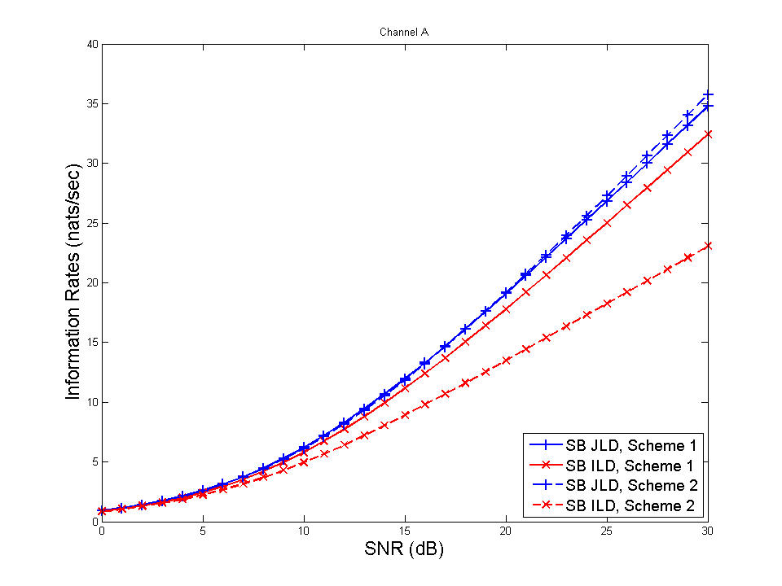
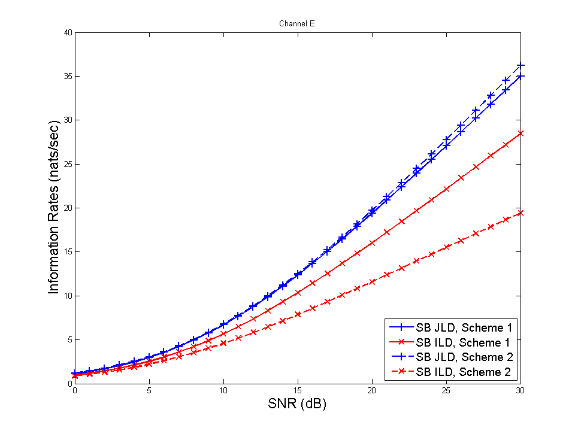

Load Files and Compare Information Rates
Contents
Get a batch of files (matching certain filename pattern)
path = './';
sim_file_pattern = '*.mat*';
sim_file_list = dir([path sim_file_pattern]);
Index the filenames by 'channel' and 'scheme'
filenames = struct;
for j=1:length(sim_file_list)
filename = sim_file_list(j).name;
filename_ch = upper( filename(length('channelx')) );
filename_sch = filename(length('channelx_schemex'));
s = sprintf('File %s : Channel %s, Scheme %s\n', filename, filename_ch, filename_sch );
fprintf(s)
filenames.(filename_ch).(['sch' filename_sch]) = filename;
end
File channela_scheme1_060314.mat : Channel A, Scheme 1
File channela_scheme2_061007.mat : Channel A, Scheme 2
File channele_scheme1_053430.mat : Channel E, Scheme 1
File channele_scheme1_054101.mat : Channel E, Scheme 1
File channele_scheme1_054357.mat : Channel E, Scheme 1
File channele_scheme1_054724.mat : Channel E, Scheme 1
File channele_scheme1_055339.mat : Channel E, Scheme 1
File channele_scheme2_061614.mat : Channel E, Scheme 2
Load results from files
CHANNEL_LIST = {'A','E'};
SCHEME_LIST = {1, 2};
runtimes = [];
RESULTS = struct;
for c = 1:length(CHANNEL_LIST)
ch_idx = CHANNEL_LIST{c};
RESULTS.(['CHANNEL' ch_idx]) = struct;
for s = 1:length(SCHEME_LIST)
sch_idx = SCHEME_LIST{s};
filename = filenames.(ch_idx).(['sch' num2str(sch_idx)]);
fprintf('Loading %s\n', filename)
load([path filename]);
RATES = struct;
RX_LIST = fieldnames(DATA.RX);
for r = 1:length(RX_LIST)
RX = RX_LIST{r};
RATES.(RX) = DATA.RX.(RX).RATE;
end
RESULTS.(['CHANNEL' ch_idx]).(['SCHEME' num2str(sch_idx)]) = RATES;
end
end
RESULTS.SNRdB = DATA.SNRdB;
SNRdB_vec = RESULTS.SNRdB;
Loading channela_scheme1_060314.mat
Loading channela_scheme2_061007.mat
Loading channele_scheme1_055339.mat
Loading channele_scheme2_061614.mat
Plot information rates
LineWidth = 2;
MarkerSize = 10;
FontSize = 17;
FontSizeLegend = 14;
line_style{1} = { 'g*-', 'bs-', 'm+-', 'rx-', 'bo-'};
line_style{2} = { 'g*-', 'bs-', 'm+-', 'rx-', 'bo-'};
line_style{3} = { 'g*-', 'bs-', 'm+-', 'rx-', 'bo-'};
CHANNEL_LIST = {'A','E'};
SCHEME_LIST = {1, 2};
for c=1:length(CHANNEL_LIST)
channel_index = CHANNEL_LIST{c};
ch = ['CHANNEL' channel_index];
for s=1:length(SCHEME_LIST)
scheme_index = SCHEME_LIST{s};
sch = ['SCHEME' num2str(scheme_index)];
fig_index = 1000+s+c*length(SCHEME_LIST);
set(figure(fig_index),'Name','Rate (nats/sec) vs SNR (dB)')
plot(SNRdB_vec,RESULTS.(ch).(sch).OPT,...
line_style{scheme_index}{1},'LineWidth',LineWidth,'MarkerSize',MarkerSize)
hold on
plot(SNRdB_vec,RESULTS.(ch).(sch).EB,...
line_style{scheme_index}{2},'LineWidth',LineWidth,'MarkerSize',MarkerSize)
plot(SNRdB_vec,RESULTS.(ch).(sch).SB_JLD,...
line_style{scheme_index}{3},'LineWidth',LineWidth,'MarkerSize',MarkerSize)
plot(SNRdB_vec,RESULTS.(ch).(sch).SB_ILD,...
line_style{scheme_index}{4},'LineWidth',LineWidth,'MarkerSize',MarkerSize)
hold off
title(['Channel ' channel_index ', Scheme ' num2str(scheme_index)])
xlabel('SNR (dB)','FontSize',FontSize)
ylabel('Information Rates (nats/sec)','FontSize',FontSize)
legend(...
'Optimal',...
'EB, K=K^\prime+1',...
'SB, JLD',...
'SB, ILD',...
'Location','SouthEast')
handles = get(fig_index,'Children'); set(handles(1),'FontSize',FontSizeLegend);
set(fig_index,'Position',[2*480 50 2*480 2*360]);figure(fig_index)
fig_filename = ['RATE_' ch '_' sch '.eps'];
end
end
   
Comparing the information rates of two schemes
CHANNEL_LIST = {'A','E'};
SCHEME_PAIR_LIST = {[1 2]};
for c=1:length(CHANNEL_LIST)
channel_index = CHANNEL_LIST{c};
ch = ['CHANNEL' channel_index];
for index = 1:length(SCHEME_PAIR_LIST)
scheme_pair = SCHEME_PAIR_LIST{index};
line_style{1} = { 'g*-', 'bs-', 'b+-', 'rx-', 'bo-'};
line_style{2} = { 'g*--', 'bs--', 'b+--', 'rx--', 'bo--'};
for s = 1:2
scheme_index = scheme_pair(s);
sch = ['SCHEME' num2str(scheme_index)];
fig_index = 8000+index+c*length(SCHEME_PAIR_LIST);
figure(fig_index);
set(fig_index,'Name','R (Nats) vs SNR (dB)')
plot(SNRdB_vec,RESULTS.(ch).(sch).SB_JLD,...
line_style{s}{3},'LineWidth',LineWidth,'MarkerSize',MarkerSize)
title(['Channel ' channel_index])
xlabel('SNR (dB)','FontSize',FontSize)
ylabel('Information Rates (nats/sec)','FontSize',FontSize)
hold on
plot(SNRdB_vec,RESULTS.(ch).(sch).SB_ILD,...
line_style{s}{4},'LineWidth',LineWidth,'MarkerSize',MarkerSize)
end
hold off
legend(...
['SB JLD, Scheme ' num2str(scheme_pair(1))],...
['SB ILD, Scheme ' num2str(scheme_pair(1))],...
['SB JLD, Scheme ' num2str(scheme_pair(2))],...
['SB ILD, Scheme ' num2str(scheme_pair(2))],...
'Location','SouthEast')
handles = get(fig_index,'Children'); set(handles(1),'FontSize',FontSizeLegend);
set(fig_index,'Position',[2*480 50 2*480 2*360]);figure(fig_index)
comparison = ['SCHEME' num2str(scheme_pair(1)) 'vs' num2str(scheme_pair(2))];
fig_filename = ['RATE_' ch '_' comparison '.eps'];
print('-depsc', fig_filename)
end
end
 